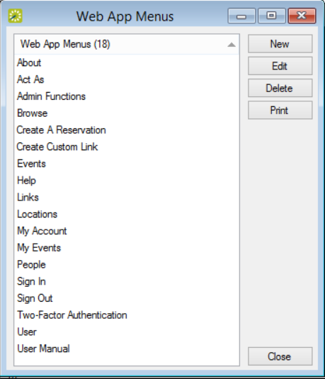
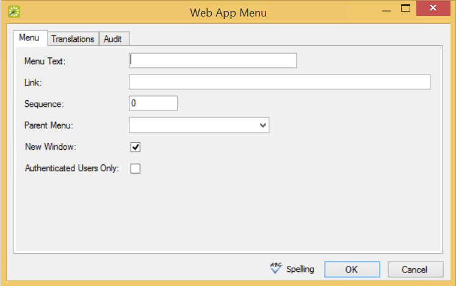

When EMS Web App is first installed, the main menu has a layout that determines the following:
You can add customized menu items to the existing list of system menus. These custom items can be links to EMS Web App pages or to websites outside EMS Web App.
On the EMS menu bar, click Configuration > Everyday User Applications > Web App Menus. The Web App Menus window opens. This window lists all the current parent menu items and child options in alphabetical order. Buttons to the right enable you to create new menus, change existing ones, delete, and print.

Web App Menus Window
To configure a new menu, click New. The Web App Menu dialog box opens. The Web App Menu tab is the active tab.

Menu Tab of the Web App Menu Dialog Box
Enter the information for the new web menu item.
Menu Tab Field Descriptions
|
Field |
Description |
|---|---|
|
Menu Text |
The text for the item as it is to appear on the EMS Web App menu. |
|
Sequence |
A number that indicates the order in which this menu option is to appear relative to other menu items that fall under the same parent menu. Items are ordered from lowest to highest sequence number, with the item with the lowest sequence number appearing first. If you leave the sequence set to the default value of zero for all menu items, then by default, the items are displayed alphabetically. |
|
Link |
The URL or web address for the menu (for example, www.myorganization.com). |
|
Parent Menu |
The primary menu under which this new menu item is found. |
|
New Window |
Select this option if this new menu item should open in a new browser window or tab (with EMS Web App remaining open behind the new window or tab. |
|
Authenticated Users Only |
Select this option if access to this new menu item is restricted to only those users who have logged in to EMS Web App. |
If you have EMS Web App open, you might have to log out and then log back in to see the new menu item.